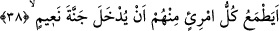
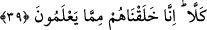

38. Onlardan her biri Naîm cennetine sokulacağını mı umuyor?
“Onlardan” o sana doğru koşuşanlardan “her biri”, îman etmeden, içerisinde hiçbir
gam ve keder bulunmayan, sırf nimetlerden ibâret olan “Naîm cennetine sokulacağını
mı umuyor?”
Âyette ummak anlamına “tama’” kelimesi kullanılmaktadır. Tama’, insan nefsinin
herhangi bir şeye doğru -ona karşı istek duyduğu için- meyletmesi demektir. Tama’ın
ekserisi nefsin hevâ ve hevesinden kaynaklanır.
39. Hayır (hiç ummasınlar!) Şüphesiz biz onları, kendilerinin de bildikleri şeyden
yarattık (fakat ibret almadılar, îmâna gelmediler).
Hayır mânâsına gelen “kellâ” kelimesi, onların bu besledikleri boş tamahlarını
reddetmek ve boşa çıkarmak içindir. Bir başka ifâdeyle onlara: “Bırakın bu tamahı,
vazgeçin böylesi sözlerden” denmiş oluyor. Hayır, sizin umduğunuz şekilde değildir,
kâfirler için cennete gitmeye yol yoktur.
Eğer: “Onlar bu sözü alay etmek için söylüyorlar, bu durumda cenneti umdukları nasıl
söylenebilir?” denirse buna şöyle cevap verilir: “Allah Teâlâ o kâfirlerin hâllerini çok
iyi bilmektedir. Belki de onların içinde cennete gideceğini uman kimseler vardı. Eğer
böyle değilse, onların reddedilmesinden maksad, bâzı zayıf kimselerin “acaba doğru mu
söylüyorlar” şeklinde kapılabileceği vehmi ortadan kaldırmaktır.
Âyette “yedhulu” yâni girmek fiilinin değil de “yudhale: girdirilmek ve sokulmak”
fiilinin kullanılmasının bir sebebi vardır. Onların “eğer bunlar -Muhammed’in dediği
gibi- cennete girerlerse biz onlardan önce gireriz” ifâdesi reddedildiğine göre ilk
bakışta “yedhulu” yâni gireceklerini mi umuyorlar denmesi gerekirdi. İşte böyle
söylenmemekle işâret olunuyor ki cennete giren mutlaka Cenâb-ı Hakk’ın oraya koyması
ve meleklere emriyle girecektir ve bu kâfirler cennete girmelerine sebep olacak
şefâatten mahrum kalacaklardır. Yine işâret olunuyor ki “girme” fiili gerek ihbârî ve
gerek inşâî olarak her iki durumda da sâdece kendilerinden râzı olunan, îmanları ve
itâatları sebebiyle Allah Teâlâ’nın katında ağırlanacak olan kimseler için kullanılır.
Nitekim Allah Teâlâ şöyle buyurur:
“Erkek olsun kadın olsun her kim de mümin olarak sâlih ameller işlerse işte
onlar cennete girerler.” (en-Nisa, 4/124)
“Girin cennete, artık size korku yoktur ve siz üzülecek de değilsiniz.” (el-A’raf,
7/49)
Cennetler çok olmasına rağmen burada cennet kelimesinin elif-lamsız nekre